Visualization for explanation
1 Introduction
Although although visualization is often used simply to characterize
individual variables, its use to understand relationship among variables
is probably of greater value (see, for example, Wickham, H, and G.
Grolemund, 2017, R for Data Science, O’Reilly UO
library. The examples here reproduce some of the analyses in Daniau,
A.-L., P.J. Bartlein, S.P. Harrison and 57 others, 2012, Predictability
of biomass burning in response to climate changes, Global
Biogeochemical Cycles 26, GB4007, doi:10.1029/2011GB004249,
which focued on both paleo and present-day relationship between global
biomass burning and climate. The present-day analysis focused on the
prediction of satellite remote-sensing patterns of biomass burning from
the GFEDv3.1 database (Global Fire Emissions, http://www.globalfiredata.org).
The idea was to find a small number of predictors of the broadscale
patterns of biomass burning, and it turned out that in both the paleo
and present-day data sets, those predictors were mean annual temperature
and precipitation minus evaporation (P-E, or pme). The
analysis below recapitulates some of the analyses in the Daniau et
al. paper.
Here, most of the analysis is done using the ggplot2
package for mapping and visualization.
2 Data
The input data consist of the GFEDv3.1 burned fraction (of
half-degree grid cells, gfed), several bioclimatic
variables (mean annual temperature (mat), mean temperature
of the warmest and coldest months (mtwa and
mtco respectively), growing degree days (5-deg C base,
gdd5), annual precipitation (map), annual
equilibrium evapotranspiration (aet), precipitation minus
evapotranspiration (pme), lightning-strike frequency
(hmrc), population density (gpw), net primary
productivity (npp), treecover (treecov), and
two categorical variables describing “megabiomes” and potential natural
vegetation types (megabiome and vegtype
respectively).
Load the necessary packages:
## Linking to GEOS 3.11.0, GDAL 3.5.3, PROJ 9.1.0; sf_use_s2() is TRUERead the data from a pre-made .csv file.
# read the data
csvpath <- "/Users/bartlein/Projects/ESSD/data/csv_files/"
csvname <- "global_fire.csv"
csvfile <- paste(csvpath, csvname, sep="")
gf <- read.csv(csvfile)
str(gf)## 'data.frame': 54642 obs. of 17 variables:
## $ lon : num -73.8 -73.2 -72.8 -72.2 -71.8 ...
## $ lat : num -52.8 -52.8 -52.8 -52.8 -52.8 ...
## $ gfed : num 0 0 0 0 0 0 0 0 0 0 ...
## $ mat : num 6.54 5.72 5.16 5.51 5.53 ...
## $ mtco : num 3.1 1.9 1 1 0.8 ...
## $ mtwa : num 9.7 9.2 8.9 9.6 9.8 ...
## $ gdd5 : num 690 543 466 569 598 ...
## $ gpw : num 1.78 1.78 1.78 1.78 1.78 ...
## $ hrmc : num 0.031 0.031 0.031 0.031 0 ...
## $ map : int 3992 3222 2485 1829 1217 687 381 309 297 284 ...
## $ aet : num 393 335 366 490 585 ...
## $ alpha : num 0.667 0.576 0.635 0.833 0.983 ...
## $ pme : num 3599 2887 2119 1339 632 ...
## $ treecov : int 0 0 0 0 39 0 0 23 0 0 ...
## $ npp : num 331 348 381 377 442 ...
## $ megabiome: chr "None" "None" "None" "None" ...
## $ vegtype : chr "EDMFW" "PDRI" "EDMFW" "GrStp" ...## lon lat gfed mat mtco
## Min. :-179.75 Min. :-52.75 Min. :0.0000000 Min. :-22.808 Min. :-51.600
## 1st Qu.: -60.25 1st Qu.: 7.25 1st Qu.:0.0000000 1st Qu.: -1.358 1st Qu.:-19.100
## Median : 31.75 Median : 36.75 Median :0.0001737 Median : 10.946 Median : 0.100
## Mean : 22.12 Mean : 29.85 Mean :0.0229601 Mean : 10.068 Mean : -1.871
## 3rd Qu.: 93.75 3rd Qu.: 55.75 3rd Qu.:0.0051268 3rd Qu.: 23.292 3rd Qu.: 16.700
## Max. : 179.75 Max. : 80.25 Max. :1.1285924 Max. : 30.500 Max. : 28.000
## mtwa gdd5 gpw hrmc map aet
## Min. :-1.50 Min. : 0 Min. : 0.000 Min. : 0.000 Min. : 0.0 Min. : 0.0
## 1st Qu.:15.60 1st Qu.: 895 1st Qu.: 0.203 1st Qu.: 1.037 1st Qu.: 273.0 1st Qu.: 229.7
## Median :22.20 Median :2737 Median : 2.135 Median : 3.112 Median : 500.0 Median : 385.6
## Mean :21.48 Mean :3667 Mean : 38.516 Mean : 7.221 Mean : 709.6 Mean : 474.2
## 3rd Qu.:27.40 3rd Qu.:6678 3rd Qu.: 17.975 3rd Qu.:10.265 3rd Qu.: 927.0 3rd Qu.: 663.4
## Max. :38.20 Max. :9317 Max. :7895.593 Max. :98.868 Max. :7531.0 Max. :1538.3
## alpha pme treecov npp megabiome
## Min. :0.0000 Min. : -13.052 Min. : 0.0 Min. : 5.9 Length:54642
## 1st Qu.:0.4491 1st Qu.: 0.265 1st Qu.: 0.0 1st Qu.: 176.4 Class :character
## Median :0.6678 Median : 66.514 Median : 0.0 Median : 340.6 Mode :character
## Mean :0.6003 Mean : 235.368 Mean :21.9 Mean : 411.4
## 3rd Qu.:0.7997 3rd Qu.: 257.029 3rd Qu.:44.0 3rd Qu.: 581.6
## Max. :1.0000 Max. :6073.094 Max. :80.0 Max. :1372.7
## vegtype
## Length:54642
## Class :character
## Mode :character
##
##
## The two categorical (i.e. factor) variables have levels arranged in the default alphabetical order. The following code reorders the levels into something more ecologically and climatically sensible:
# reorder megabiomes
megabiome_name <- c("TropF", "WarmF", "SavDWd", "GrsShrb", "Dsrt", "TempF", "BorF", "Tund", "None", "Ice")
gf$megabiome <- factor(gf$megabiome, levels=megabiome_name)
# reorder vegtypes
vegtype_name <- c("TrEFW","TrDFW","TeBEFW","TeNEFW","TeDFW","BrEFW","BrDFW","EDMFW",
"Savan","GrStp","ShrbD","ShrbO","Tund","Dsrt","PDRI")
gf$vegtype <- factor(gf$vegtype, levels=vegtype_name)
# check the new ordering of factor levels
str(gf[16:17])## 'data.frame': 54642 obs. of 2 variables:
## $ megabiome: Factor w/ 10 levels "TropF","WarmF",..: 9 9 9 9 9 9 9 7 7 7 ...
## $ vegtype : Factor w/ 15 levels "TrEFW","TrDFW",..: 8 15 8 10 10 10 10 10 10 10 ...3 Maps
It’s geneerally useful to map the data first. The following code
implements ggplot2 maps. A shapefile of world outlines is
read the usual way with the sf package, then converted to a
ggplot2 compatible format using the fortify()
function:
# read a world outlines shape file
shp_path <- "/Users/bartlein/Projects/ESSD/data/shp_files/ne_110m_admin_0_countries/"
shp_name <- "ne_110m_admin_0_countries.shp"
shp_file <- paste(shp_path, shp_name, sep="")
# read the shapefile
world_shp <- read_sf(shp_file)
world_outline <- as(st_geometry(world_shp), Class="Spatial")
world_outline_gg <- fortify(world_outline)## Warning: `fortify(<SpatialPolygons>)` was deprecated in ggplot2 3.4.4.
## ℹ Please migrate to sf.
## This warning is displayed once every 8 hours.
## Call `lifecycle::last_lifecycle_warnings()` to see where this warning was generated.# ggplot map of world_outline
ggplot(world_outline_gg, aes(long, lat)) + geom_polygon(aes(group = group), color = "gray50", fill = NA) +
coord_quickmap() + theme_bw()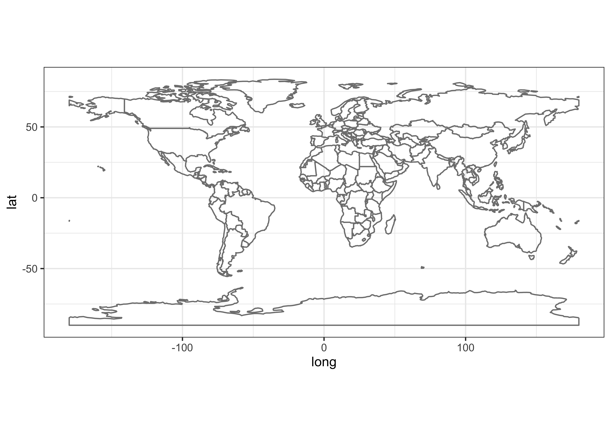
The map-pattern of the burned-fraction variable can be produced as follows:
ggplot(gf, aes(lon, lat)) +
geom_raster(aes(fill = log10(gf$gfed))) +
scale_fill_gradient2(low = "white", mid="orange", high = "firebrick1", midpoint=-4, na.value="gray80") +
geom_polygon(aes(long, lat, group = group), world_outline_gg, color = "gray70", fill = NA, lwd=0.5) +
labs(title="GFEDv3.1 Burned Fraction") +
coord_equal() + theme_bw() + theme(legend.position="bottom")## Warning: Use of `gf$gfed` is discouraged.
## ℹ Use `gfed` instead.## Warning: Raster pixels are placed at uneven horizontal intervals and will be shifted
## ℹ Consider using `geom_tile()` instead.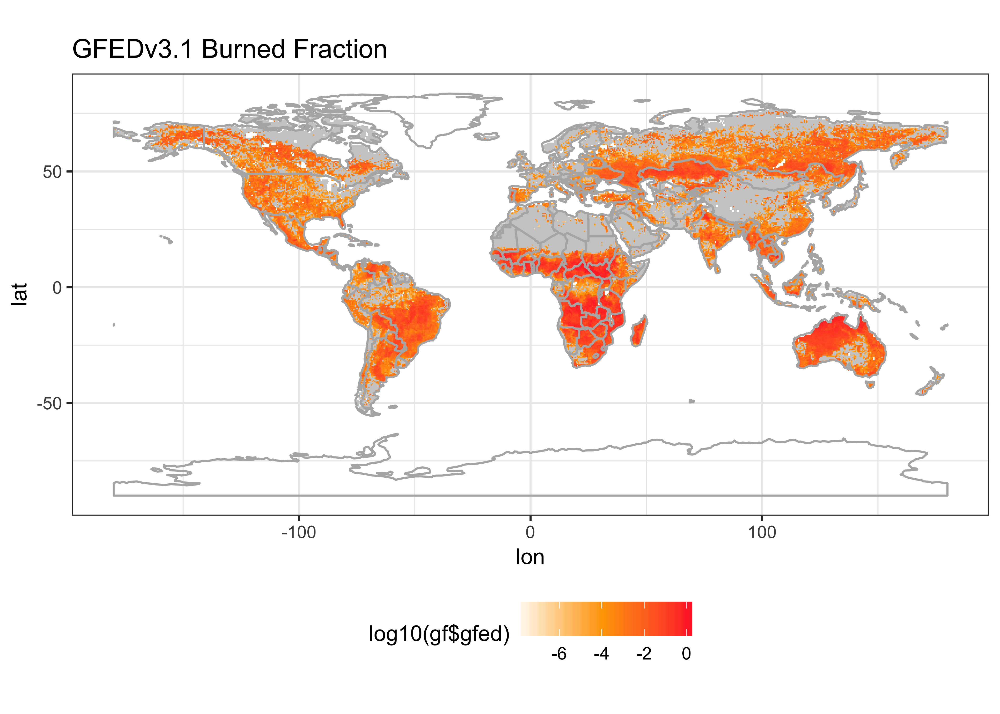
4 Set up
4.1 Transformation
Simple inspection of the data and preliminary examination reveals
that many of the variables have long-tailed distributions, and
non-linear relationships. This can be verified using a faceted plot of
histograms. Note the use of the dplyr gather()
function to “stack” the variables, and the free_x argument
to the `facet_wrap() function to allow each variable to plotted on
individual as opposed to joint scales:
# check distributions
ggplot(gather(gf[3:15]), aes(value)) +
geom_histogram(bins = 20) +
facet_wrap(~key, scales = 'free_x') +
theme_bw()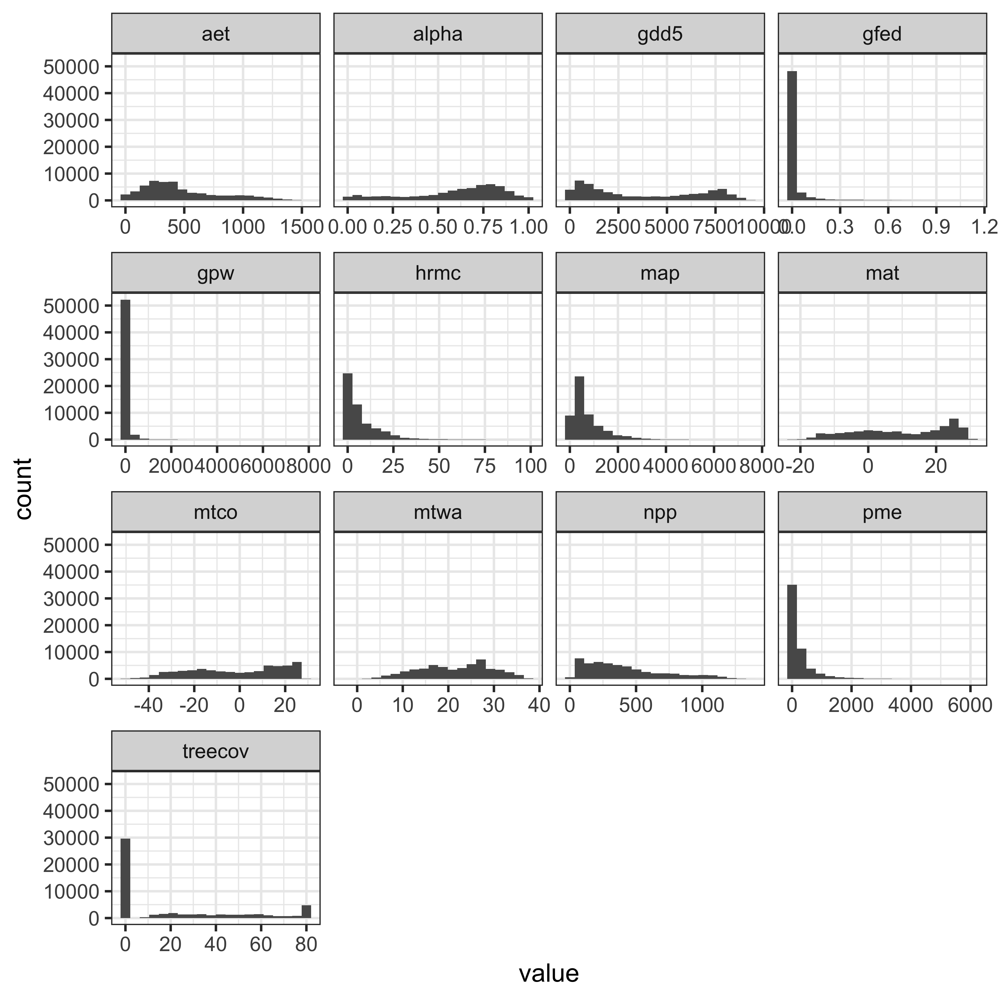
For example, burned fraction has the kind of distribution, that if zeros are removed and the values tranformed by taking logarithms, would be approximately normal.
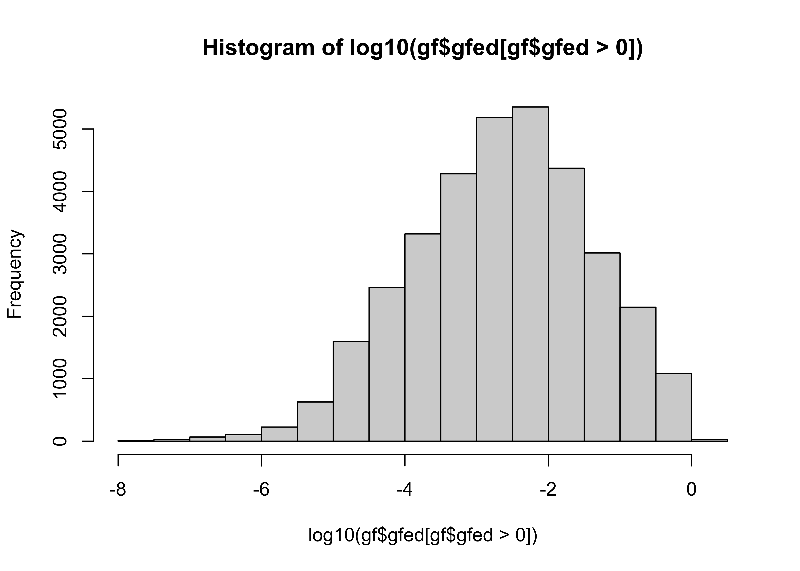
Find the minimum non-zero value of burned fraction:
## [1] -7.618481Tranform by taking logs (base 10), adding an increment slightly smaller than that minimum value, and check the distribution again.
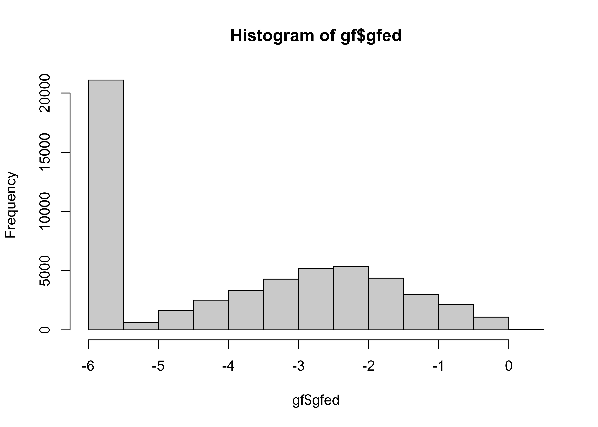
A few other variables can be transformed in a similar fashion:
hist(gf$hrmc)
gf$hrmc <- sqrt(gf$hrmc)
hist(gf$hrmc)
hist(log10(gf$gpw[gf$gpw > 0]))
min(log10(gf$gpw[gf$gpw > 0]))
gf$gpw <- log10(gf$gpw + 1e-10)
hist(gf$gpw)
hist(gf$map)
gf$map <- sqrt(gf$map)
hist(gf$map)
hist(gf$pme)
gf$pme <- sqrt(gf$pme - min(gf$pme))
hist(gf$pme)Check the distributions again:
# check distributions
ggplot(gather(gf[3:15]), aes(value)) +
geom_histogram(bins = 20) +
facet_wrap(~key, scales = 'free_x') +
theme_bw()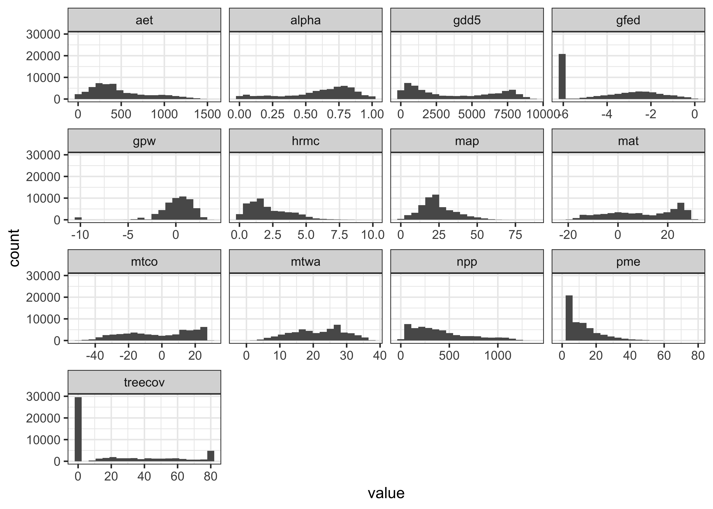
4.2 Censor observations with unusual megabiome values
In the following analyses, the megabiome variable will
be used to label points and to construct faceted plots. There are a few
observations with megabiome values of “None” or “Ice”:
## [1] "TropF" "WarmF" "SavDWd" "GrsShrb" "Dsrt" "TempF" "BorF" "Tund" "None" "Ice"##
## TropF WarmF SavDWd GrsShrb Dsrt TempF BorF Tund None Ice
## 6678 2331 4719 9372 6728 7874 11356 4896 638 50These can be removed by creating a list of the megabiomes we want to
include, and dropping the “None” and “Ice” observations. (The same could
be done for the vegtype variable.)
# drop last two categories
mb2 <- c("TropF", "WarmF", "SavDWd", "GrsShrb", "Dsrt", "TempF", "BorF", "Tund")
gf <- gf[gf$megabiome %in% mb2, ]
table(gf$megabiome)##
## TropF WarmF SavDWd GrsShrb Dsrt TempF BorF Tund None Ice
## 6678 2331 4719 9372 6728 7874 11356 4896 0 05 Controls of biomass burning
There is a continuum of ideas on what controls biomass burning, which has at one end climate, and the other ignition (lighting and humans). (It’s envogue to always discuss biomass burning from the perspective of controls as a triangle, no matter what the scale of analysis, and so a triangle here would be climate-humans-lightning, but it turns out that humans and lightning aren’t really significant at a global scale–lightning is well correlated with other climate variables, and humans suppress as many fires as they set.)
The goal here is to look at the relationships between burned fraction
and the other available predictors. The particular mechanism is a
ggplot2 plot, with added “smooths” (including both linear
and non-linear (i.e. non-parametric) curves). Although the addition of
smooth curves to what are ordinary scatter plots could be viewed as
simple plot-summary mechanisms, the are actually the first step in
coming up with a systematic relationshp between one of the potential
predictors and the response (burned fraction). The following plots
consist of simple scatter plots, supplemented by one of two smoothed
curves: 1) a data-driven flexible curve, as implemented by a generalized
additive model (GAM), which makes no assumption about the form of the
relationship, other than it’s relatively smooth; and 2) a linear
(i.e. OLS) regression line.
5.1 Bivariate relationship with burned fraction
The first set of plots consist of one-predictor-variable-at-a-time
plots, staring with the basic moisture and temperature variables as
preditors. Here, for example, is a plot of burned fraction vs. P-E, with
a GAM curve added. That curve is specified by the argument
(method = 'gam', formula = y ~ s(x, bs = "cs", k = 4 to the
geom_smooth() function. The formula argument
specifies a GAM with a cubic spline (with “shrinkage”), and relatively
small number of “knots” (k=4), which yields a relative
smooth curve, one more appropriate form summarizing as opposed to
interpolating).
# single-variable plots
# burned fraction vs. pme
ggplot(data = gf) +
aes(x = gf$pme, y=gfed) +
geom_point(alpha = 0.1) +
geom_smooth(method = 'gam', formula = y ~ s(x, bs = "cs", k = 4), col="purple") +
theme_bw()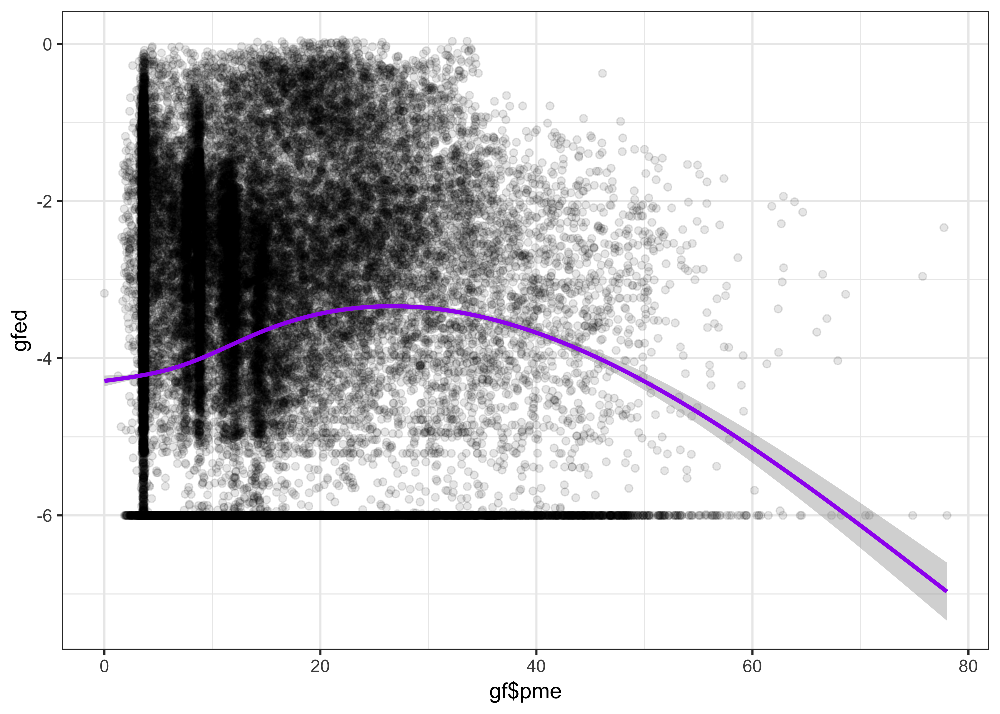
The relationship is evidently nonlinear; burned fraction is highest
at intermediate levels of P-E. Here is a similar plot, with the
Priestley-Taylor alpha (the ratio AE/PE) as a
predictor:
# vs. alpha
ggplot(data = gf) +
aes(x = alpha, y=gfed) +
geom_point(alpha = 0.1) +
geom_smooth(method = 'gam', formula = y ~ s(x, bs = "cs", k = 4), col="purple") +
theme_bw()
The relationship is similar to that for P-E: burned fraction is low in the driest and the wettest environments, and highest at intermediate levels of moisure.
The other likely important predictor of biomass burning is mean
annual temperature mat, which on a global scale controls
biomass productivity, and hence fuel avaiabiliy.
# vs. mat
ggplot(data = gf) +
aes(x = mat, y=gfed) +
geom_point(alpha = 0.1) +
geom_smooth(method = 'gam', formula = y ~ s(x, bs = "cs", k = 3), col="purple") +
theme_bw()
The “curve” fit by the GAM model is not too curvy at all, and so it seems reasonable to summarize the relationship by a straight line model:
# vs. mat, linear smaoth
ggplot(data = gf) +
aes(x = mat, y=gfed) +
geom_point(alpha = 0.1) +
geom_smooth(method = 'lm', col="red")+
theme_bw()## `geom_smooth()` using formula = 'y ~ x'
Other potential relationship can be explored as follows:
# vs. gdd5
ggplot(data = gf) +
aes(x = gdd5, y=gfed) +
geom_point(alpha = 0.1) +
geom_smooth(method = 'gam', formula = y ~ s(x, bs = "cs", k = 3), col="purple") +
theme_bw()
# vs. treecov
ggplot(data = gf) +
aes(x = treecov, y=gfed) +
geom_point(alpha = 0.1) +
geom_smooth(method = 'gam', formula = y ~ s(x, bs = "cs", k = 3), col="purple") +
theme_bw()
# vs. gpw
ggplot(data = gf) +
aes(x = gpw, y=gfed) +
geom_point(alpha = 0.1) +
geom_smooth(method = 'gam', formula = y ~ s(x, bs = "cs", k = 3), col="purple") +
theme_bw()
# vs. hrmc
ggplot(data = gf) +
aes(x = hrmc, y=gfed) +
geom_point(alpha = 0.1) +
geom_smooth(method = 'gam', formula = y ~ s(x, bs = "cs", k = 3), col="purple") +
theme_bw()
# vs. npp
ggplot(data = gf) +
aes(x = npp, y=gfed) +
geom_point(alpha = 0.1) +
geom_smooth(method = 'gam', formula = y ~ s(x, bs = "cs", k = 4), col="purple") +
theme_bw() 5.2 Influence of vegetation type on biomass burning
Vegetation obviously has an impact on biomass burning, with low values in regions of sparse vegetation, like deserts and tundra, and potentially higher values in regions of dense vegetation. The impact on the relationship between one of the potential predictors and burned fraction of vegetation type can be explored by point-labled plots or multi-panel plots.
# points by vegtype
# burned fraction vs. alpha
ggplot(data = gf) +
aes(x = alpha, y=gfed) +
scale_color_brewer(palette="Accent") +
geom_point(aes(color=gf$megabiome)) +
geom_smooth(method = 'gam', formula = y ~ s(x, bs = "cs", k = 4), col="purple") +
theme_bw()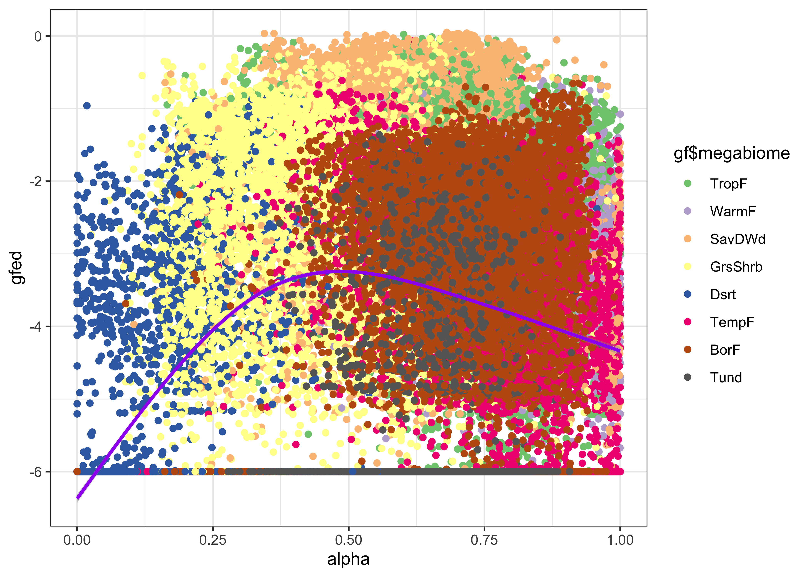
# multiplanel plots by vegtype
# vs. alpha
ggplot(data = gf) +
aes(x = alpha, y=gfed) +
geom_point(alpha = 0.1) +
geom_smooth(method = 'gam', formula = y ~ s(x, bs = "cs", k = 3), col="purple") +
facet_wrap(~ gf$megabiome, nrow=2) +
theme_bw()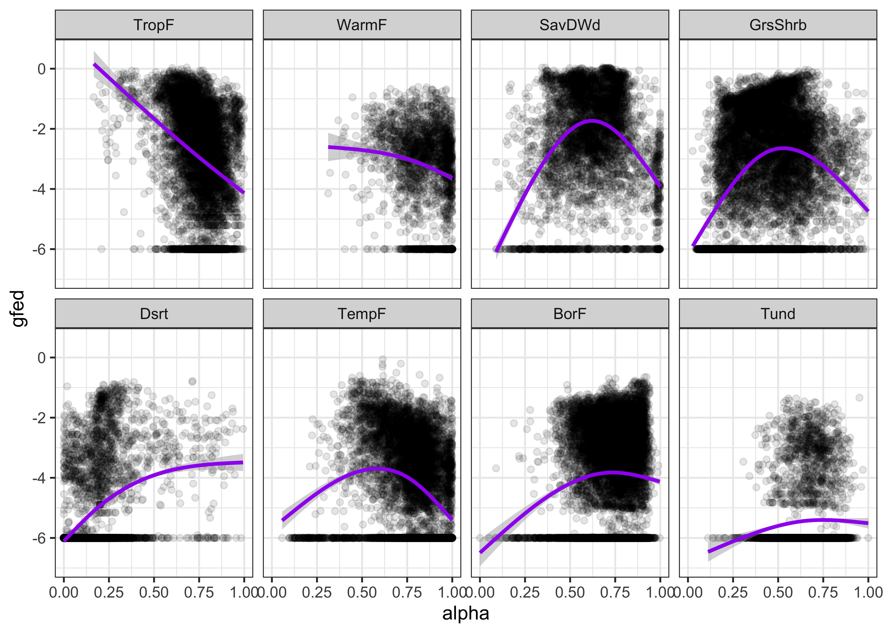
(Note that in the above plot alpha is used ambiguously,
both as a variable name and as a property of the plotted points
(i.e. their tranparency).)
Other plots can be constructed:
# vs. mat
ggplot(data = gf) +
aes(x = mat, y=gfed) +
geom_point(alpha = 0.1) +
geom_smooth(method = 'gam', formula = y ~ s(x, bs = "cs", k = 3), col="purple") +
facet_wrap(~ gf$megabiome, nrow=2) +
theme_bw()
# vs. mat, linear smooth
ggplot(data = gf) +
aes(x = mat, y=gfed) +
geom_point(alpha = 0.1) +
geom_smooth(method = 'lm', formula = y ~ x, col="red") +
facet_wrap(~ gf$megabiome, nrow=2) +
theme_bw()
# vs. npp
ggplot(data = gf) +
aes(x = npp, y=gfed) +
geom_point(alpha = 0.1) +
geom_smooth(method = 'gam', formula = y ~ s(x, bs = "cs", k = 3), col="purple") +
facet_wrap(~ gf$megabiome, nrow=2) +
theme_bw()
# vs. npp, linear smooth
ggplot(data = gf) +
aes(x = npp, y=gfed) +
geom_point(alpha = 0.1) +
geom_smooth(method = 'lm', formula = y ~ x, col="red") +
facet_wrap(~ gf$megabiome, nrow=2) +
theme_bw()5.3 A two-predictor Generalized Additive Model (GAM)
From the above, it seems that mean annual temperature
mat and P-E pme (or AE/PE alpha)
are the useful predictors of burned fraction (gfed). That
raises the possibility of including both in a predictive model, which
can be implemented using the mgcv package (which was also
implicity used above).
Load the mgcv library, and fit a model with burned
fraction as the response, and mat and pme as
predictors:
## Loading required package: nlme## This is mgcv 1.9-0. For overview type 'help("mgcv-package")'.# regressions
gam01 <- gam(gf$gfed ~ te(mat, bs="cs", k=4) + te(pme, bs="cs", k=3), data=gf)
summary(gam01)##
## Family: gaussian
## Link function: identity
##
## Formula:
## gf$gfed ~ te(mat, bs = "cs", k = 4) + te(pme, bs = "cs", k = 3)
##
## Parametric coefficients:
## Estimate Std. Error t value Pr(>|t|)
## (Intercept) -3.897832 0.007725 -504.6 <2e-16 ***
## ---
## Signif. codes: 0 '***' 0.001 '**' 0.01 '*' 0.05 '.' 0.1 ' ' 1
##
## Approximate significance of smooth terms:
## edf Ref.df F p-value
## te(mat) 2.981 3 1412 <2e-16 ***
## te(pme) 2.000 2 1059 <2e-16 ***
## ---
## Signif. codes: 0 '***' 0.001 '**' 0.01 '*' 0.05 '.' 0.1 ' ' 1
##
## R-sq.(adj) = 0.0989 Deviance explained = 9.9%
## GCV = 3.2199 Scale est. = 3.2196 n = 53954The first-order diagnostic plot for examining the fit of a GAM model
can be gotten with the gam.check() function (not shown
here)
An informative diagnostic is provided by the partial residual plots for each variable, which summarize the bivariate relationship between the response and the predictors.
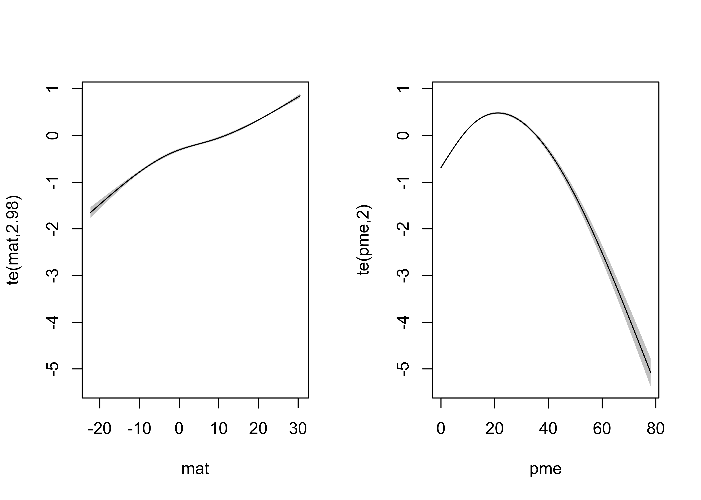
Finally, the bivariate relationship can be revealed by a 3-D response surface.
# perspective plot
new_mat <- seq(from=-20, to=30, len=40); new_pme <- seq(from=0, to=80, len=40)
#new_mat <- seq(from=min(gf$mat), to=max(gf$mat), len=40); new_pme <- seq(from=min(gf$pme), to=max(gf$pme), len=40)
new_x <- expand.grid(mat=new_mat, pme=new_pme)
gam01_sfc <- predict(gam01, new_x)
gam01_sfc <- matrix(gam01_sfc, 40, 40)
persp(new_mat, new_pme, gam01_sfc, theta=-65, phi=30, d=1.5, col="gray", ticktype="detailed",
zlim=c(-10,0), xlab="MAT (C)", ylab="sqrt(Annual P-E (mm))", xlim=c(-20,30), ylim=c(-10,80),
zlab = "log10 GFED 3.1 Burned Fraction")## Warning in persp.default(new_mat, new_pme, gam01_sfc, theta = -65, phi = 30, : surface extends beyond
## the box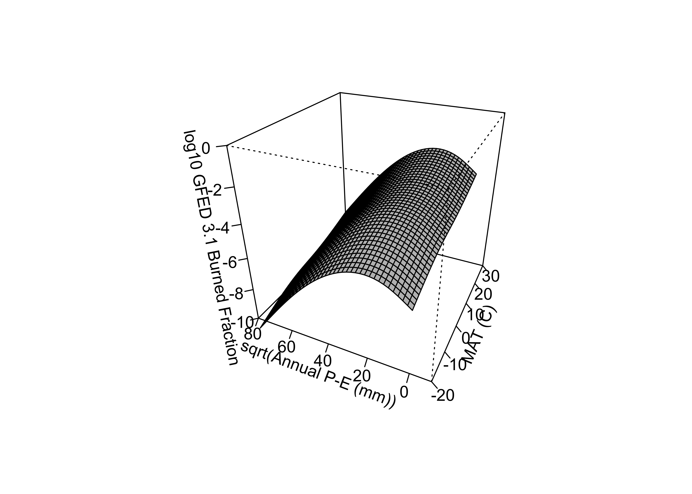
The take-home message here is that burned fraction responds linearly to mean annual temperature, and cuvilinearly with respect to P-E, with (as we have already seen) highest values at intermediate levels of moisture.